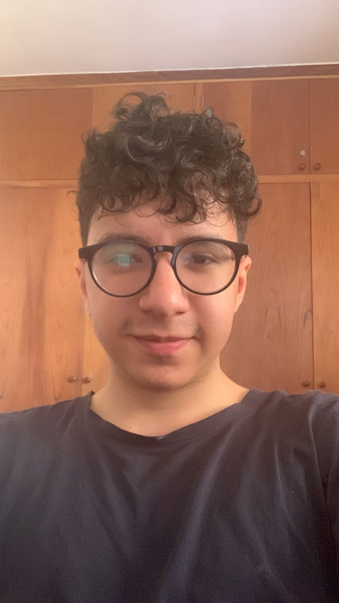
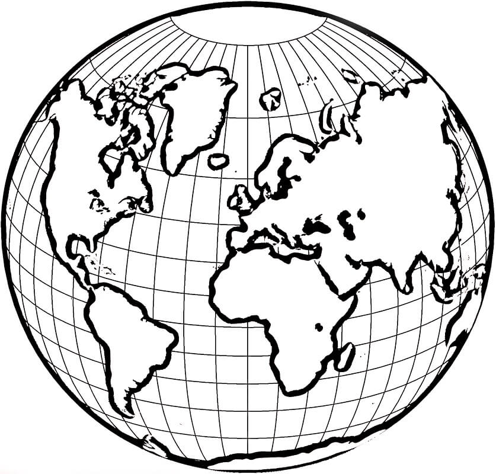
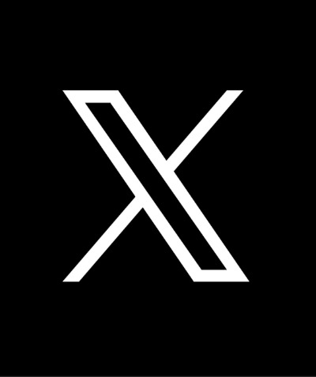
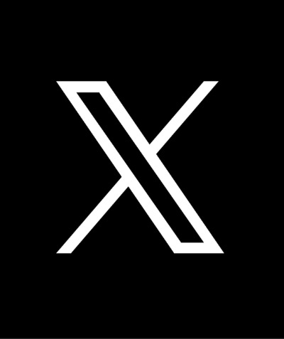

Programmer, Computer Science, Software Engineer and Game Developer | VIM, Game Design and Hacking Enthusiastic
 
 


I am a Programmer, Trilingual, Computer Science Major and Software Engineer with a solid specialization in C# .NET, C/C++, Golang, and Python, focusing on Backend development. Throughout my career, I have worked on challenging projects that have strengthened my ability to create efficient and scalable solutions. My focus is on building robust and high-performance software, with a constant commitment to continuous improvement. I am passionate about problem-solving and always seek new opportunities to learn and grow in the ever-evolving field of technology.
2022 - Present
2018
2019-2020